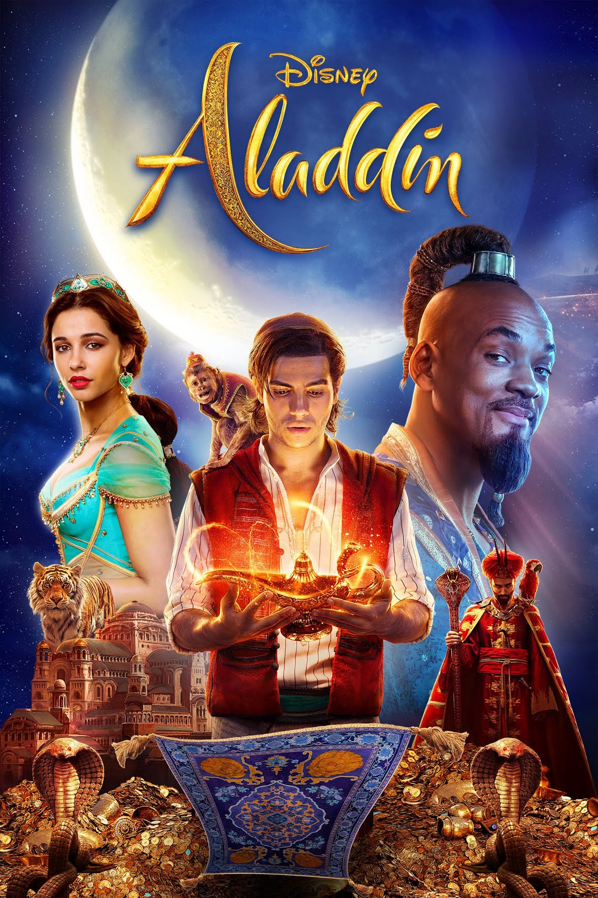

Guy Ritchie
Guy Ritchie on Suurbritannia filmirežissöör. Ta sündis 10. septembril aastal 1968 Hatfield'is.
Mõned Guy Ritchie filmid:
Sherlock Holmes (2009)

Aladdin (2019)
 Guy Ritchie on Suurbritannia filmirežissöör. Ta sündis 10. septembril aastal 1968 Hatfield'is.
Guy Ritchie on Suurbritannia filmirežissöör. Ta sündis 10. septembril aastal 1968 Hatfield'is.
Guy Ritchie on Suurbritannia filmirežissöör. Ta sündis 10. septembril aastal 1968 Hatfield'is.
Guy Ritchie on Suurbritannia filmirežissöör. Ta sündis 10. septembril aastal 1968 Hatfield'is.